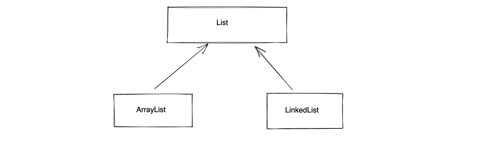

10.Java
1.基础语法
- 主函数，程序入口
public class Hello {
public static void main(String[] args) {
System.out.println("你好呀");
}
}
- 文件名
一个文件中最多只能有一个public类 且 文件名必须和public类名一致。
如果文件中有多个类，文件名与public类名一致。
如果文件中有多个类 且 无public类，文件名可以是任意类名。
- 类名
首字母大写且驼峰式命名，例如：Hello、UserInfo、PersonApplication
- 类修饰符
public、default（不写）
- 静态成员,无需实例化就可以调用
class MyTest{
public void f1(){
System.out.println("f1");
}
public static void f2(){
System.out.println("f2");
}
}
public class Hello {
public static void main(String[] args) {
MyTest.f2();
//1.实例化
MyTest obj = new MyTest();
// 2.对象调用
obj.f1();
}
}
class Person{
public static void f1(){
// 静态方法
System.out.println("我是F1函数");
}
}
public class Hello {
public static void main(String[] args) {
Person.f1();
}
}
class Person {
public void f2() {
// 实例方法
System.out.println("我是F1函数");
}
}
public class Hello {
public static void main(String[] args) {
// 实例化对象 obj = Person();
Person obj = new Person();
// 对象调用f2
obj.f2();
}
}
- void，无返回值
class MyTest{
public int f1(){
System.out.println("f1");
return 123;
}
public static String f2(){
System.out.println("f2");
return "哈哈哈";
}
}
public class Hello {
public static void main(String[] args) {
MyTest obj = new MyTest();
int v1 = obj.f1();
String v2 = MyTest.f2();
}
}
- 蚕食
class MyTest {
public int f1(int a1, int a2) {
int result = a1 + a2;
return result;
}
}
public class Hello {
public static void main(String[] args) {
MyTest obj = new MyTest();
int v1 = obj.f1(1, 2);
}
}
2.3.1 注释
/**
* 对这个类进行注释
*/
public class Hello {
/**
* 这个方法是干嘛....
* @param v1 大小
* @param v2 尺寸
* @return 返回一个xxx
*/
public static String getSign(int v1, String v2) {
return "哈哈哈";
}
public static void main(String[] args) {
// 单行注释
// int age = 18;
/* 多行注释
String name = "武沛齐";
int size = 18;
*/
}
}
注意：JavaScript
2.3.2 变量和常量
public class Hello {
public static void main(String[] args) {
String name = "武沛齐";
name = "alex";
int age = 19;
age = 20;
final int size = 18;
}
}
v1 = [111,22]
v2 = 345
2.3.3 输入和输出
import java.util.Scanner;
public class Hello {
public static void main(String[] args) {
// 输入
Scanner input = new Scanner(System.in);
String text = input.nextLine();
// 输出
System.out.println(text);
// System.out.print(text);
}
}
import java.util.Scanner;
public class Hello {
public static void main(String[] args) {
// 输出
System.out.print("请输入：");
// 输入
Scanner input = new Scanner(System.in);
String text = input.nextLine();
// 输出
System.out.println(text);
}
}
2.3.4 条件语句
import java.util.Scanner;
public class Hello {
public static void main(String[] args) {
int age = 19;
if (age < 18) {
System.out.println("少年");
} else if (age < 40) {
System.out.println("大叔");
} else {
System.out.println("老汉");
}
}
}
public class Hello {
public static void main(String[] args) {
int score = 19;
switch (score) {
case 10:
System.out.println("xxx");
System.out.println("xxx");
System.out.println("xxx");
break;
case 20:
System.out.println("xxx");
System.out.println("xxx");
System.out.println("xxx");
break;
default:
System.out.println("xxx");
break;
}
}
}
2.3.5 循环语句
while循环
public class Hello {
public static void main(String[] args) {
int count = 0;
while (count < 3) {
System.out.println("执行中...");
count += 1;
}
}
}
do while循环（至少执行1次）
public class Hello {
public static void main(String[] args) {
int count = 0;
do {
System.out.println("执行中...");
count += 1;
} while (count < 3);
}
}
for循环
public class Hello {
public static void main(String[] args) {
for (int i = 0; i < 10; i++) {
System.out.println("哈哈哈");
}
}
}
public class Hello {
public static void main(String[] args) {
String[] nameList = {"修仙", "肖峰", "麻子", "十分"};
// nameList.length 4
// nameList[0]
for (int idx = 0; idx < nameList.length; idx++) {
String ele = nameList[idx];
System.out.println(ele);
}
}
}
注意：也支持break/continue。
2. 数据类型
2.1 整数类型
- byte，字节 【1字节】表示范围：-128 ~ 127 即：
-2^7 ~ 2^7 -1 - short，短整型 【2字节】表示范围：-32768 ~ 32767
- int，整型 【4字节】表示范围：-2147483648 ~ 2147483647
- long，长整型 【8字节】表示范围：-9223372036854775808 ~ 9223372036854775807
2.2 数组
存放固定长度的元素。
- 容器
- 固定长度
- 特定类型
import java.util.Arrays;
public class Hello {
public static void main(String[] args) {
// [123,1,999]
int[] numArray = new int[3];
numArray[0] = 123;
numArray[1] = 1;
numArray[2] = 99;
System.out.println(Arrays.toString(numArray));
String[] names = new String[]{"武沛齐", "alex", "eric"};
System.out.println(Arrays.toString(names));
String[] nameArray = {"武沛齐", "alex", "eric"};
System.out.println(Arrays.toString(nameArray));
// nameArray[0]
// nameArray.length
for (int idx = 0; idx < nameArray.length; idx++) {
String item = nameArray[idx];
}
}
}
注意：数组一旦创建个数就不可调整。
2.3 关于Object
在Java所有的类都是默认继承Object类。
用基类可以泛指他的子类的类型。
import sun.lwawt.macosx.CSystemTray;
import java.util.Arrays;
public class Hello {
public static void main(String[] args) {
// String v1 = "wupeiqi";
Object v1 = new String("wupeiqi");
System.out.println(v1);
System.out.println(v1.getClass());
Object v2 = 123;
System.out.println(v2);
System.out.println(v2.getClass());
}
}
import sun.lwawt.macosx.CSystemTray;
import java.util.Arrays;
public class Hello {
public static void main(String[] args) {
// 声明数组，数组中元素必须int类型;
int[] v1 = new int[3];
// 声明数组，数组中元素必须String类型;
String[] v2 = new String[3];
// 声明数组，数组中可以是必须int/String类型;
Object[] v3 = new Object[3];
v3[0] = 123;
v3[1] = "wupeiqi";
}
}
所以，如果以后想要声明的数组中想要是混合类型，就可以用Object来实现。
import java.util.Arrays;
public class Hello {
public static void main(String[] args) {
// v1是指上字符串对象；String
String v1 = new String("wupeiqi");
String res = v1.toUpperCase();
System.out.println(res);
// v2本质是字符串对象；Object
Object v2 = new String("wupeiqi");
String data = (String)v2;
}
}
import java.util.Arrays;
public class Hello {
public static void func(Object v1) {
// System.out.println(v1);
// System.out.println(v1.getClass());
if (v1 instanceof Integer) {
System.out.println("整型");
} else if (v1 instanceof String) {
System.out.println("字符串类型");
} else {
System.out.println("未知类型");
}
}
public static void main(String[] args) {
func(123);
func("123");
}
}
- Java中所有的类都继承Object，Object代指所有的类型。
- 自己创建关系 
ArrayList v1 = new ArrayList();
LinkedList v2 = new LinkedList();
List v1 = new ArrayList();
List v2 = new LinkedList();
Object v1 = new ArrayList();
Object v2 = new LinkedList();
import java.util.Arrays;
public class Hello {
public static void main(String[] args) {
// 声明数组，数组中元素必须int类型;
int[] v1 = new int[3];
// 声明数组，数组中元素必须String类型;
String[] v2 = new String[3];
// 声明数组，数组中可以是必须int/String类型;
Object[] v3 = new Object[3];
v3[0] = 123;
v3[1] = "wupeiqi";
}
}
所以，如果以后想要声明的数组中想要是混合类型，就可以用Object来实现。
3.常见数据类型
3.1 List系列
类似于Python中的列表。
List是一个接口，接口下面有两个常见的类型（目的是可以存放动态的多个数据）
- ArrayList，连续的内存地址的存储（内部自动扩容）。 -> Python列表的特点
- LinkedList，底层基于链表实现（自行车链条）。 -> Python列表的特点
ArrayList v1 = new ArrayList();
v1.add("武沛齐");
v1.add("麻子");
LinkedList v1 = new LinkedList();
v1.add("武沛齐");
v1.add("麻子");
Java中接口，是用来约束实现他的类，约束他里面的成员必须有xx。
interface List{
public void add(Object data); // 接口中的方法，不写具体的实现，只用于约束。
}
// 类ArrayList实现了接口List，此时这个类就必须有一个add方法。
class ArrayList implements List{
public void add(Object data){
// 将数据data按照连续存储的方法放在内存。
// ..
}
}
// 类LinkedList实现了接口List，此时这个类就必须有一个add方法。
class LinkedList implements List{
public void add(Object data){
// 将数据data按照链表的形式存储
// ..
}
}
List v1 = new ArrayList();
v1.add("武沛齐");
v1.add("麻子");
List v1 = new LinkedList();
v1.add("武沛齐");
v1.add("麻子");
ArrayList示例：
import java.util.ArrayList;
import java.util.Arrays;
public class Hello {
public static void main(String[] args) {
// ArrayList，默认内部存放的是混合数据类型。
// ArrayList<String> data = new ArrayList<String>();
// ArrayList<Object> data = new ArrayList<Object>();
ArrayList data = new ArrayList();
data.add("武沛齐");
data.add("alex");
data.add(666);
data.add("tony");
String value = data.get(1);
// String value = (String) data.get(1);
Object temp = data.get(1);
String value = (String) temp; // 转化可转换的数据
System.out.println(value);
int xo = (int) data.get(2);
System.out.println(xo);
data.set(0, "哈哈哈哈");
System.out.println(data);
data.remove("eric");
data.remove(0);
System.out.println(data);
int size = data.size();
System.out.println(size);
boolean exists = data.contains("武沛齐");
System.out.println(exists);
for (Object item : data) {
System.out.println(item);
}
for (int i = 0; i < data.size(); i++) {
Object item = data.get(i);
System.out.println(item);
}
}
}
LinkedList示例：
import java.util.LinkedList;
public class Hello {
public static void main(String[] args) {
LinkedList<Integer> v1 = new LinkedList<Integer>();
v1.add(11);
v1.add(22);
LinkedList<Object> v2 = new LinkedList<Object>();
v2.add("有阪深雪");
v2.add("大桥未久");
v2.add(666);
v2.add(123);
//v2.remove(1);
//v2.remove("路飞");
v2.set(2, "苍老师");
v2.push("哈哈哈");
// v2.addFirst(11);
for (int i = 0; i < v2.size(); i++) {
Object item = v2.get(i);
System.out.println(item);
}
for (Object item : v2) {
System.out.println(item);
}
}
}
关于迭代器：
import java.util.*;
public class Hello {
public static void main(String[] args) {
ArrayList s1 = new ArrayList();
s1.add("P站");
s1.add("B站");
s1.add("A站");
Iterator it = s1.iterator(); // 迭代器
while (it.hasNext()) {
String item = (String) it.next();
System.out.println(item);
}
}
}
3.2 Set系列
Set是一个接口，常见实现这个接口的有两个类，用于实现不重复的多元素集合。
- HashSet，去重，无序。
- TreeSet，去重，内部默认排序（ascii、unicode）【不同的数据类型，无法进行比较】。
import java.util.*;
public class Hello {
public static void main(String[] args) {
// HashSet s1 = new HashSet();
// Set s1 = new HashSet();
// HashSet<String> s1 = new HashSet<String>();
HashSet s1 = new HashSet();
s1.add("P站");
s1.add("B站");
s1.add("A站");
s1.add("P站");
s1.add(666);
System.out.println(s1); // [B站, A站, P站,666]
// s2 = {"东京热","东北热","南京热"}
HashSet s2 = new HashSet(){
{
add("东京热");
add("东北热");
add("南京热");
}
};
System.out.println(s2);
// Set s2 = new TreeSet();
// TreeSet<String> s2 = new TreeSet<String>();
TreeSet s3 = new TreeSet();
s3.add("P站");
s3.add("B站");
s3.add("A站");
s3.add("P站");
// s3.add(666); //不可以
System.out.println(s3); // [B站, A站, P站]
TreeSet s4 = new TreeSet(){
{
add("P站");
add("B站");
add("A站");
add("P站");
}
};
System.out.println(s4); // [B站, A站, P站]
}
}
关于交并差：
import java.util.*;
public class Hello {
public static void main(String[] args) {
// Set s1 = new HashSet();
HashSet s1 = new HashSet();
s1.add("P站");
s1.add("B站");
s1.add("A站");
s1.remove("P站");
System.out.println(s1); // [B站, A站, P站]
boolean exists = s1.contains("B站");
System.out.println(exists);
HashSet s2 = new HashSet();
s2.add(123);
s2.add(456);
HashSet v1 = new HashSet(); // 空 -> [B站, A站, P站]
v1.addAll(s1);
v1.retainAll(s2); // 交集 &
System.out.println(v1);
HashSet v2 = new HashSet();
v2.addAll(s1);
v2.addAll(s2); // 并集 |
System.out.println(v2);
HashSet v3 = new HashSet();
v3.addAll(s1);
v3.removeAll(s2); // 差集 s1 - s2
System.out.println(v3);
HashSet v4 = new HashSet();
v4.addAll(s2);
v4.removeAll(s1); // 差集 s2 - s1
System.out.println(v4);
}
}
关于循环获取：
import java.util.*;
public class Hello {
public static void main(String[] args) {
TreeSet s1 = new TreeSet();
s1.add("P站");
s1.add("B站");
s1.add("A站");
for (Object item : s1) {
System.out.println(item);
}
}
}
关于迭代器：
import java.util.*;
public class Hello {
public static void main(String[] args) {
TreeSet s1 = new TreeSet();
s1.add("P站");
s1.add("B站");
s1.add("A站");
Iterator it = s1.iterator();
while (it.hasNext()) {
String item = (String) it.next();
System.out.println(item);
}
}
}
3.3 Map系列
Map是一个接口，常见实现这个接口的有两个类，用于存储键值对。
-
HashMap，无序。
-
TreeMap，默认根据key排序。（常用）
在Python中需要自己处理key排序的问题。
v4 = {
"aid":123,
"xx":999,
"wid":888
}
# 1.根据key进行排序
# data = ["{}={}".format(key,v4[key]) for key in sorted(v4.keys())]
# 2.再进行拼接
# result = "&".join(data)
result = "&".join(["{}={}".format(key,v4[key]) for key in sorted(v4.keys())])
import java.util.*;
public class Hello {
public static void main(String[] args) {
HashMap h1 = new HashMap();
h1.put("name","alex");
h1.put("age",18);
h1.put("hobby","男");
System.out.println(h1); // {gender=男, name=alex, age=18}
HashMap<String,String> h2 = new HashMap<String,String>();
h2.put("name","alex");
h2.put("age","18");
h2.put("hobby","男");
System.out.println(h2); // {gender=男, name=alex, age=18}
HashMap<String,String> h3 = new HashMap<String,String>(){
{
put("name","alex");
put("age","18");
put("hobby","男");
}
};
System.out.println(h3); // {gender=男, name=alex, age=18}
}
}
import java.util.*;
public class Hello {
public static void main(String[] args) {
TreeMap h1 = new TreeMap(); // 改为了TreeMap
h1.put("name","alex");
h1.put("age",18);
h1.put("hobby","男");
System.out.println(h1); // {age=18, hobby=男, name=alex}
TreeMap<String,String> h2 = new TreeMap<String,String>();
h2.put("name","alex");
h2.put("age","18");
h2.put("hobby","男");
System.out.println(h2); // {age=18, hobby=男, name=alex}
TreeMap<String,String> h3 = new TreeMap<String,String>(){
{
put("name","alex");
put("age","18");
put("hobby","男");
}
};
System.out.println(h3); // {age=18, hobby=男, name=alex}
Map h4 = new TreeMap();
h4.put("name","alex");
h4.put("age",18);
h4.put("hobby","男");
System.out.println(h4); // {age=18, hobby=男, name=alex}
}
}
常见操作：
import java.util.*;
public class Hello {
public static void main(String[] args) {
TreeMap h1 = new TreeMap(); // 改为了TreeMap
h1.put("name", "alex");
h1.put("age", "18");
h1.put("hobby", "男");
h1.put("hobby", "女人");
h1.remove("age");
int size = h1.size();
Object value = h1.get("name"); // 不存在，返回null
System.out.println(value);
boolean existsKey = h1.containsKey("age");
boolean existsValue = h1.containsValue("alex");
h1.replace("name", "李杰");
System.out.println(h1);
// 循环: 示例1
// { ("name", "alex")，("age", "18"), }
Set<Map.Entry<String, String>> s1 = h1.entrySet();
Iterator it1 = s1.iterator();
while (it1.hasNext()) {
// ("name", "alex")
Map.Entry<String, String> entry = (Map.Entry<String, String>) it1.next();
String k = (String) entry.getKey();
String v = (String) entry.getValue();
}
// 循环: 示例2
Set s2 = h1.entrySet();
Iterator it2 = s2.iterator();
while (it2.hasNext()) {
Map.Entry entry = (Map.Entry) it2.next();
String k = (String) entry.getKey();
String v = (String) entry.getValue();
}
// 循环: 示例3
TreeMap<String, String> h2 = new TreeMap<String, String>(); // 改为了TreeMap
h2.put("name", "alex");
h2.put("age", "18");
for (Map.Entry<String, String> entry : h2.entrySet()) {
String k = entry.getKey();
String v = entry.getValue();
}
// 循环: 示例4
TreeMap h3 = new TreeMap(); // 改为了TreeMap
h3.put("name", "alex");
h3.put("age", 18);
for (Object entry : h3.entrySet()) {
Map.Entry<String, Object> entryMap = (Map.Entry<String, Object>) entry;
String k = entryMap.getKey();
Object v = entryMap.getValue(); // 18 "alex"
if (v instanceof Integer) {
System.out.println("数字：" + Integer.toString((Integer) v));
} else if (v instanceof String) {
System.out.println("字符串：" + (String) v);
} else {
System.out.println("未知类型：" + v.toString());
}
}
}
}
4.面向对象相关
- Python，函数式+面向对象。
- Java，面向对象。
4.1 类和对象
class Person {
// 实例变量
public String name;
public Integer age;
// 构造方法1
public Person() {
this.name = "Eric";
this.age = 99999;
}
}
Person obj = new Person();
class Person:
# 初始化方法， 1. __new__方法，构造方法创建空对象 2.__init___方法
def __init__(self):
self.name = "eric"
self.age = 999999
obj = Person()
class Person {
// 实例变量
public String name;
public Integer age;
public String email;
// 构造方法1
public Person() {
this.name = "Eric";
this.age = 99999;
}
// 构造方法2
public Person(String name, Integer age) {
this.name = name;
this.age = age;
this.email = "xxx@live.com";
}
// 构造方法3
public Person(String name, String email) {
this.name = name;
this.age = 83;
this.email = email;
}
}
Person obj1 = new Person("wupeiqi",11);
Person obj2 = new Person();
class Person {
// 实例变量
public String name;
public Integer age;
public String email;
// 构造方法1
public Person() {
this.name = "Eric";
this.age = 99999;
}
// 构造方法2
public Person(String name, Integer age) {
this.name = name;
this.age = age;
this.email = "xxx@live.com";
}
// 构造方法3
public Person(String name, String email) {
this.name = name;
this.age = 83;
this.email = email;
}
// 定义方法（重载）
public void doSomething() {
System.out.println(this.name);
}
// 定义方法（重载）
public void doSomething(String prev) {
String text = String.format("%s-%s", prev, this.name);
System.out.println(text);
}
}
public class Hello {
public static void main(String[] args) {
// 实例化对象时，体现的主要是封装。
Person p1 = new Person();
Person p2 = new Person("alex", 73);
Person p3 = new Person("tony", "alex@sb.com");
p1.doSomething();
p1.doSomething("你好呀，");
p2.doSomething();
p2.doSomething("你好呀，");
p3.doSomething();
p3.doSomething("你好呀，");
}
}
4.2 静态成员
class Foo:
v1 = "武沛齐" # 静态变量（属于类，与对象无关）
def __init__(self):
self.name = "alex" # 实例变量，属于对象
print(Foo.v1)
# 1.创建空的区域
# 2.自动执行构造方法 __init__
obj = Foo()
print(obj.name)
print(obj.v1)

class Person {
// 静态变量
public static String city = "北京";
// 实例变量
public String name;
public Integer age;
// 构造方法1
public Person() {
this.name = "Eric";
this.age = 99999;
}
// 绑定方法
public void showInfo(){
System.out.println("哈哈哈哈");
}
// 静态方法
public static void showData(){
System.out.println("哈哈哈哈");
}
}
Person.city;
Person.showData();
Person obj = new Person();
obj.name;
obj.age;
obj.showInfo();
本质：静态属于类；非静态属于对象。
4.3 继承
Java中的继承，只支持单继承，不支持多继承，但支持实现多个接口。
class Base{
...
}
class Foo{
...
}
class Son(Base){
}
interface Base{
public void add();
}
interface Foo{
public void plus();
}
class Son implements Base,Foo {
public void add(){
}
public void plus(){
}
}
Python中之和多继承。
class Foo(Base,Bar):
pass
class Foo(IBase,IBar):
pass
class Base {
public String email;
public Base(String email) {
this.email = email;
}
public String getSubInfo() {
return String.format("%s", this.email);
}
}
// Base obj1 = new Base("xx");
// obj1.email; // "xx"
// obj1.getSubInfo();
class Person extends Base {
public String name;
public Integer age;
public Person(String name, Integer age, String email) {
super(email);// 执行父类的构造方法
this.name = name;
this.age = age;
}
public String getInfo(String v1) {
return String.format("%s-%d-%s", this.name, this.age, this.email);
}
}
// obj2 ==> email="xxx@live.com" name="wupeiqi" age=19
Person obj2 = new Person("wupeiqi",19,"xxx@live.com");
// obj2.name;
// obj2.age;
// obj2.email;
// obj2.getInfo("xxx");
// obj2.getSubInfo();
用父类泛指所有的子类。
class Base {
}
class Person extends Base {
}
Person v1 = new Person(); // v1是Person类型的对象
Base v2 = new Person(); // v2是Person类型的对象
class Base {
public void show() {
System.out.println("111");
}
}
class Person extends Base {
public void show() {
System.out.println("222");
}
}
Person v1 = new Person();
v1.show(); // 222
Base v2 = new Base();
v2.show(); // 111
Base v3 = new Person();
v3.show(); // 222
class Base {
public String email;
public Base(String email) {
this.email = email;
}
public void getSubInfo() {
System.out.println("111");
}
}
// Person类继承Base类
class Person extends Base {
public String name;
public Person(String name, Integer age, String email) {
super(email);// 执行父类的构造方法
this.name = name;
}
public void getSubInfo() {
System.out.println("222");
}
}
public class Hello {
public static void handler(Base v1){
v1.getSubInfo();
}
// 主函数
public static void main(String[] args) {
Person obj1 = new Person("wupeiqi",19,"xxx@live.com");
handler(obj1); // 222
Base obj2 = new Base("xxx@live.com");
handler(obj2); // 111
Base obj3 = new Person("wupeiqi",19,"xxx@live.com");
handler(obj3); // 222
}
}
4.4 接口
接口：
- 约束，实现他的类。
- 泛指
实现他了类。
interface IMessage {
public void send();
}
// Wechat类"实现"了Imessage接口
class Wechat implements IMessage {
public void send() {
System.out.println("发送微信");
}
}
class DingDing implements IMessage {
public void send() {
System.out.println("发送钉钉");
}
}
class Sms implements IMessage {
public void send() {
System.out.println("发送短信");
}
}
Wechat v1 = new Wechat();
IMessage v2 = new Wechat();
public class Hello {
// 多态 -> 多种形态 IMessage
public static void handler(IMessage v1){
v1.send();
}
// 主函数
public static void main(String[] args) {
Sms v1 = new Sms();
handler(v1);
}
}
在Java中：不支持同时继承多个类；支持实现多个接口。
interface IPerson {
public void f1();
public void f1(int age);
public void f2(String info);
}
interface IUser {
public String f3(int num);
}
class Base {
public String name;
public Integer age;
public String email;
public Base(String name, Integer age, String email) {
this.name = name;
this.age = age;
this.email = email;
}
public String getSubInfo() {
return String.format("%s", this.email);
}
}
class Person extends Base implements IUser, IPerson {
public Person(String name, Integer age, String email) {
super(name, age, email);
}
public String getInfo() {
return String.format("%s-%d-%s", this.name, this.age, this.email);
}
public void f1() {
System.out.println("F1,无参数");
}
public void f1(int age) {
System.out.println("F1,age参数");
}
public void f2(String info) {
System.out.println("F2");
}
public String f3(int num) {
return "哈哈哈";
}
}
public class Hello {
public static void main(String[] args) {
Person p = new Person("日天", 83, "ritian@live.com");
p.f1();
}
}
假设我现在在进行逆向，拿到apk，关于关键字去搜索：f2 ，定位到一个接口了。
interface IPerson {
public void f1();
public void f1(int age);
public void f2(String info);
}
接下来，你就应该去看都有哪些类 实现了 IPerson 接口。
- 只有1个类实现 IPerson。
- 多类类实现 IPerson 接口，筛选到底是那个类？
4.5 抽象
// 抽象类
abstract class Base {
// 抽象方法（约束子类中必须有这个方法）
public abstract void play(String name);
// 普通方法
public void stop() {
System.out.println("Stop");
}
}
class Son extends Base{
public void play(String name){
// ...
}
}
Son obj = new Son();
obj.stop();
obj.play();
Base obj1 = new Son();
注意：也可以泛指他的子类。
5.包概念
src
├── Hello.java
└── utils
└── Helper.java
// hello.java
import utils.Helper;
public class Hello {
public static void main(String[] args) {
String data = Helper.getInfo();
System.out.println(data);
}
}
// helper.java
package utils;
public class Helper {
public static String getInfo() {
return "哈哈哈";
}
}
类的修饰符：
- public，公共（任何人都能调用包中的类）。
- default，只能在当前包中被调用。
类成员修饰符：
- public，公共，所有的只要有权限访问类，类中的成员都可以访问到。
- private，私有，只允许自己类调用。
- protected，同一个包 或 子类可以访问（即使没有在同一个包内，也可以访问父类中的受保护成员）。
- default，只能在同一个包内访问。
目的：通过关键字让调用关系更加清晰（不过，很多项目不会用的那么专业）。